2023 va a seguir siendo el año del ubicuo rosa tan Barbiecore. Pero más allá del fucsia y del rosa suave, el verde agua también será una de las tendencias más potentes de la próxima temporada. El rey de los colores empolvados se formula en apetecibles total looks que Max Mara explora a través de diseños tipo de baño de aire retro (gorros incluidos). Fendi también opta por esta opción, con pantalones combinados con camisetas sin mangas estampadas. En Armani la propuesta es más sutil, en un vestido palabra de honor combinado con pantalones.
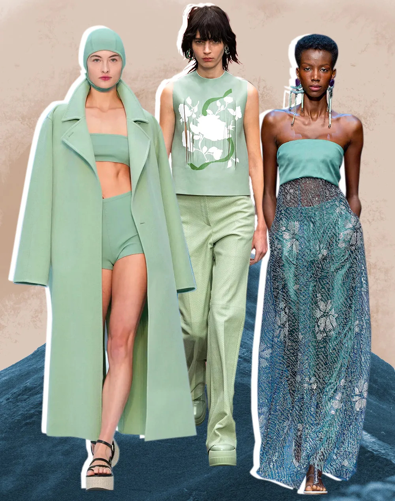Podrán llevarse pantalones más anchos o más estrechos (aunque la tónica sea precisamente los patrones XL), pero hay una pauta en las tendencias de verano 2023. Se lleva, y mucho, el tejido denim desgastado. Es el cariz que va mano a mano con la estética dosmilera la próxima temporada: Blumarine apuesta por superposiciones en sus looks que emulan a sirenas, mientras que Diesel opta por vaqueros de tiro bajo y tops palabra de honor.
Se lleva en clave total look, en pantalones deshilachados con chaqueta oversize, con ropa interior de lentejuelas, o minifalda y sujetador, con botas altas plateadas. Otra alternativa es el traje de chaqueta, que puede encontrarse en colecciones como la de Y-Project.
Es la tendencia por antonomasia de la primavera verano 2023. Es decir, si tuviésemos que quedarnos por el momento solo con una de las apuestas de la próxima temporada, subrayaríamos que el salto de cama ha pasado a primera plana sobre la pasarela. En este sentido, el camisón, o el vestido de aire lencero, será el auténtico protagonista del buen tiempo: el delicado encaje, dejando entrever el cuerpo, es la máxima de firmas como Nensi Dojaka o Coperni. Si Givenchy se decanta por el satén, dejando entrever por debajo un sujetador, Paco Rabanne opta por tejidos vinílicos.
Las transparencias están presentes, con mayor o menor discrección, en Dsquared2 o nº21. Ojo, porque el slip dress no es la única prenda en auge del tocador: Antonio Marras propone pijamas satinados en los que el hombro cae estratégicamente, mientras que Christopher Kane también incluye faldas y trajes de chaqueta. La supersposición es la clave: se puede llevar sobre pantalones tipo pijama, como en Collina Strada, o sobre vestidos transparentes, como en Burberry o Bottega Veneta.
De gasa, tipo rejilla o con encaje. La alfombra roja, la pasarela e Instagram se han puesto de acuerdo en encumbrar los vestidos transparentes. Una tendencia solo apta para atrevidas que promete un look de fiesta épico. Los hemos visto en Elie Saab, Acne Studios, Giambattista Valli o Lanvin.
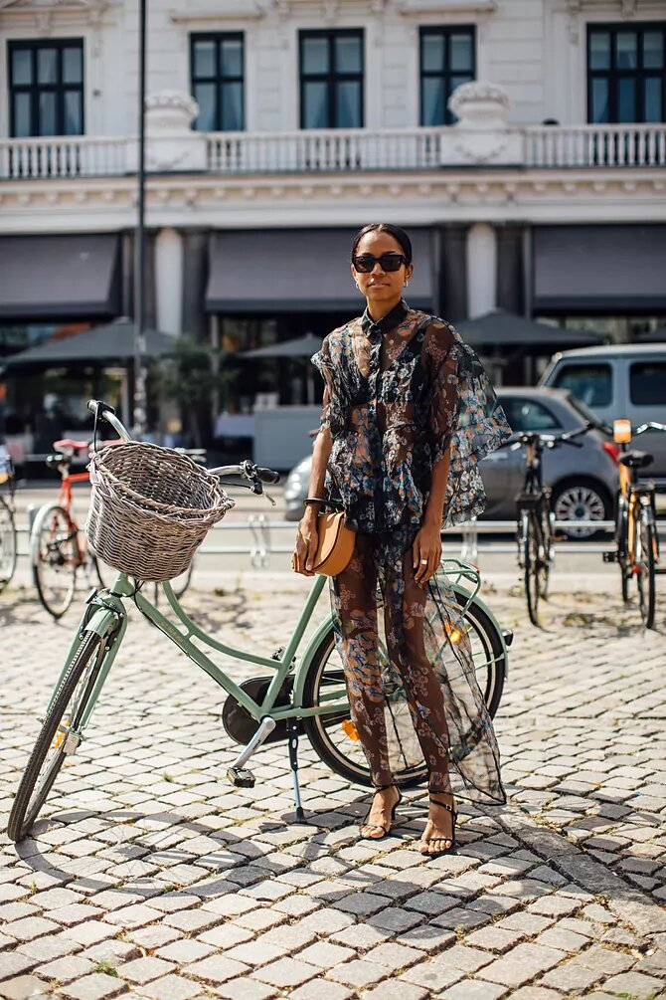Esta primavera-verano los pantalones cortos se llevarán de dos formas radicalmente opuestas. Por un lado nos topamos con los dad pants, tipo bermuda. Por otro, están los minishorts. Para empezar a ponértelos desde ya sigue las pautas de Alexa Chung y combínalos con un jersey en tono neutro, unas medias negras y zapatos de tacón sensato.
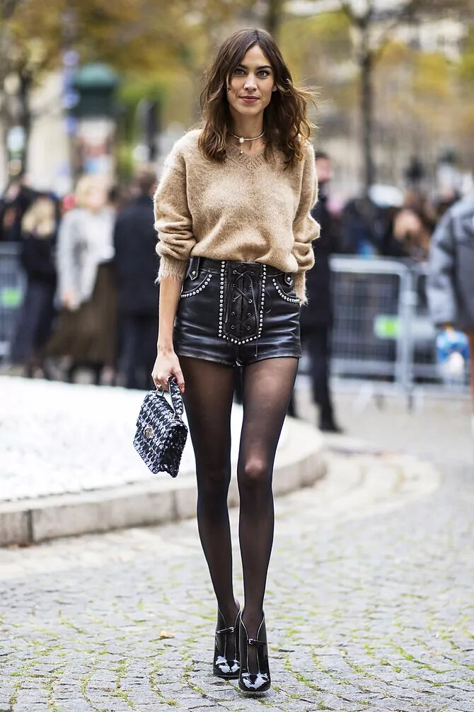
En cuando a siluetas, sucede como en periodo de pandemia: paradójicamente, vuelven aquellos volúmenes imposibles que se alineaban con la distancia social. En 2023 no pasa tanto por salvaguardar el espacio personal de cada uno, sino de recurrir a artificios históricos. La de Dior fue una de las propuestas más reseñables, gracias a estructuras tipo verdugado que desdibujaban el cuerpo a la altura de la cadera, pero en versiones XS, como las minicrinis que popularizó en su día Vivienne Westwood.
Collina Strada han hecho de este tipo de vestidos con volumen a ambos laterales de la figura su sello de identidad: son diseños rotundos que igual se conjugan con pedrería que con delicados estampados. No hay término medio. Si Loewe o Toga se decantan por líneas arquitectónicas en estilismos de minimalistas, Balmain apuesta por lo contrario, en piezas que convierten el look en un cuadro viviente.
En las tendencias de primavera verano 2023 la obsesión por el cuerpo es omnipresente, y se lleva hasta sus últimas consecuencias. Ya no hablamos solo de mostrarlo literalmente a través de transparencias o prendas reducidas, sino de emularlo a través de efectos tipo trampantojo. Schiaparelli fue de las primeras casas que dibujó la figura femenina en abrigos y vestidos, al tiempo que trasladaba las manos, la boca o los ojos, a todo tipo de accesorios.
Si en 2022 la atención se centraba en el pecho, de cara a 2023 el foco se desdibuja. Vivetta juega con la idea de los pezones, mientras Balmain reformula el naked dress con vestidos que estampa con desnudos de obras de arte universales. Otros son más literales: Off-white presenta chaquetas con motivos radiografiados, mientras que Christopher Kane opta por incluir dibujos anatómicos en sus prendas, como sacados de un libro de medicina.
Es ya un clásico en la época de primavera-verano. Y es que siempre que suben las temperaturas apetece sacar del armario un vestido floral o invertir en uno nuevo. Esta temporada lleva el romanticismo al extremo con mangas prominentes, vuelo y colores dulzones.
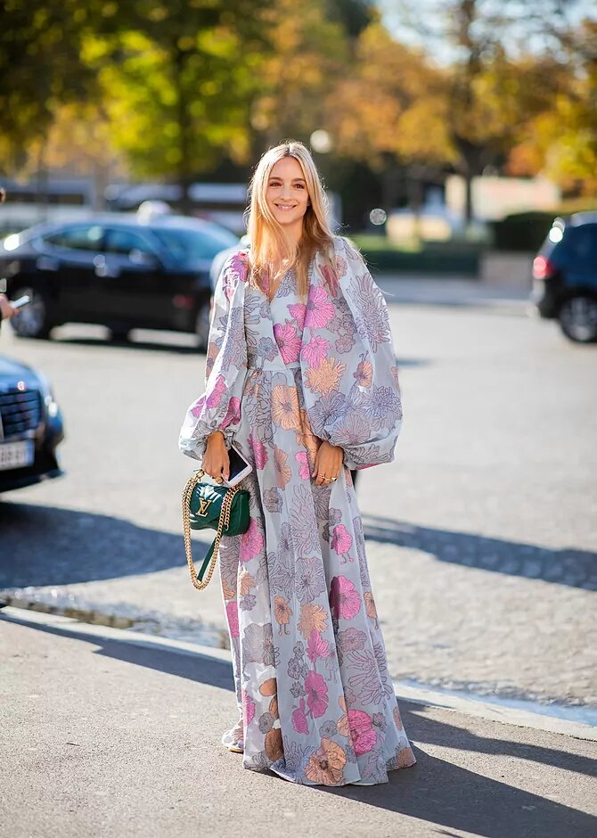Un detalle que trasforma hasta el vestido más sobrio. A veces, un recurso tan sencillo como lucir una sola manga puede resultar definitivo para crear un buen look. La expertas en moda se apuntan al que promete ser el vestido del verano. Deja que tu outfit respire la esencia del minimalismo chic con un modelo discreto pero arrebatadoramente elegante.
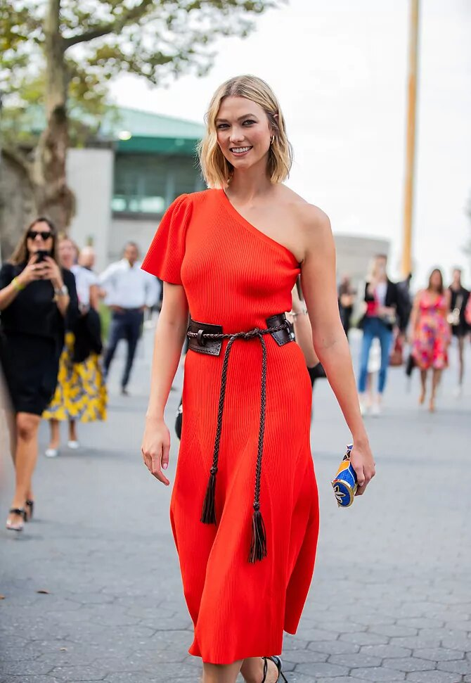Adorada por las danesas, la falda midi de satén es ya una pieza de fondo de armario clave. Elige un diseño liso y juega con sus infinitas posibilidades. Alterando los accesorios, se adapta al día y a la noche.
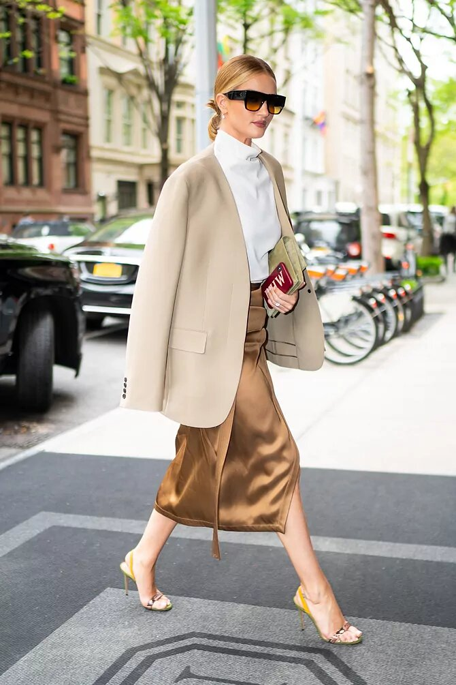Versace, Nensi Dojaka o Fendi son solo algunas de las firmas que han incluido ceñidísimos vestidos nude entre sus propuestas de nueva temporada. El modo de uso es claro: reducir los accesorios al mínimo y apostar por la sencillez. Como demuestra Natalia Vodianova, un naked dress puede ser tan elegante como un vestido negro.
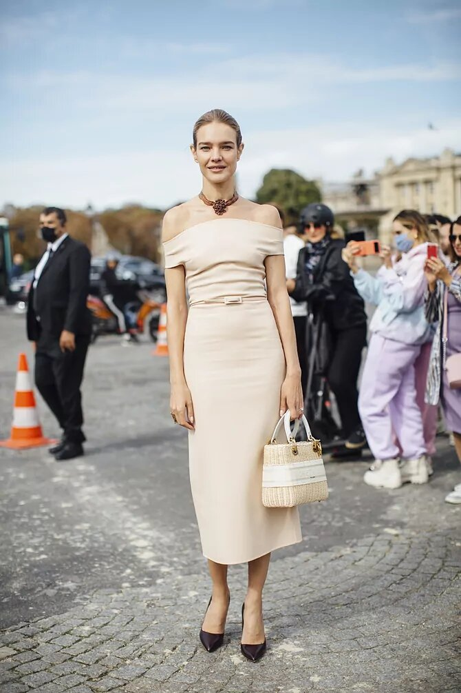Los 90 son la década en la que fijarse este otoño-invierno. El lema "menos es más" toma impulso frente a la excentricidad que antaño solía dominar los alrededores de los desfiles para salir en la foto. Este nuevo escenario explica la relevancia de los vestidos sencillos, sin adornos, con un patrón impecable y, preferiblemente, de color negro.
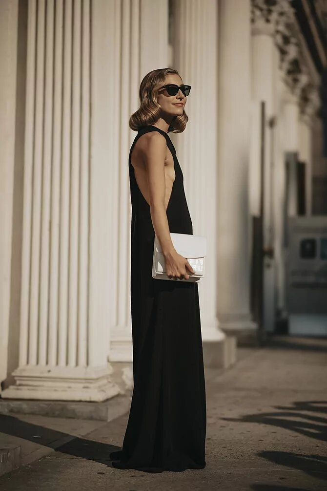Las prendas de cuero y efecto piel irrumpen con fuerza la nueva temporada. En chaquetas, vestidos y, por supuesto, pantalones. Un material acorde al otoño que promete looks rotundos. Aunque lo veremos en distintos colores, el negro es el gran favorito. A la hora de combinar el pantalón de cuero de forma elegante, la sobriedad marca la pauta.
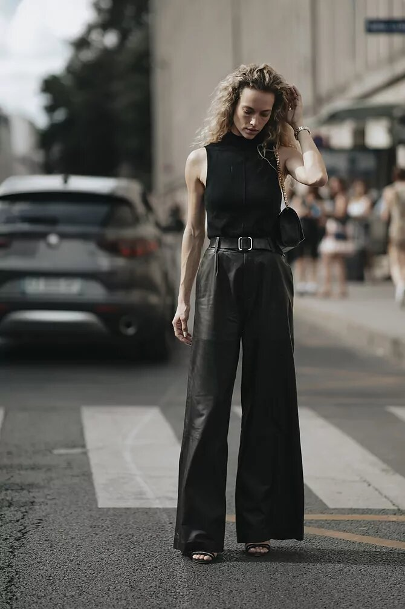Siguen siendo la opción denim predilecta de las expertas en moda. Aunque convivirán con otros modelos, como los de color blanco o los boyfriend jeans. La gran baza de este tipo de pantalón es que sienta bien a todo tipo de siluetas y combina con cualquier calzado, lo que lo convierte en una buena inversión. ¿Dónde encontrar los vaqueros rectos definitivos? En las tiendas vintage siempre hay una buena selección de Levi's.
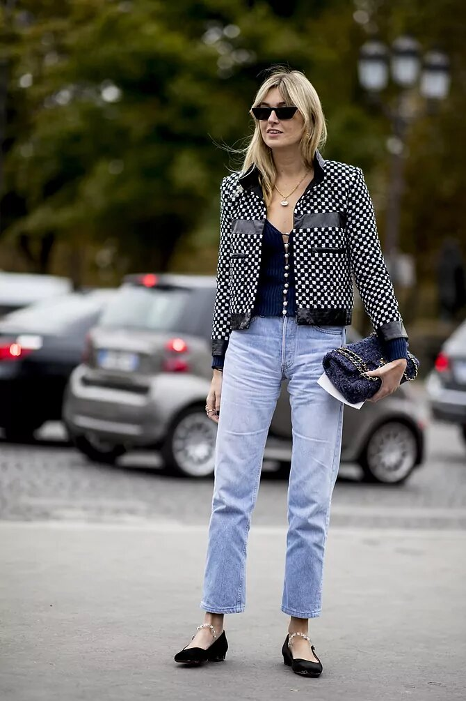Frente a los looks depurados también hay cabida para la teatralidad, y es aquí donde entra en juego la falda de tul, protagonista del desfile otoño-invierno de Dior. Una buena alternativa para aquellas invitadas que huyen del clásico vestido. El mejor consejo para llevarla es darle todo el protagonismo y combinarla con un top o un suéter liso.
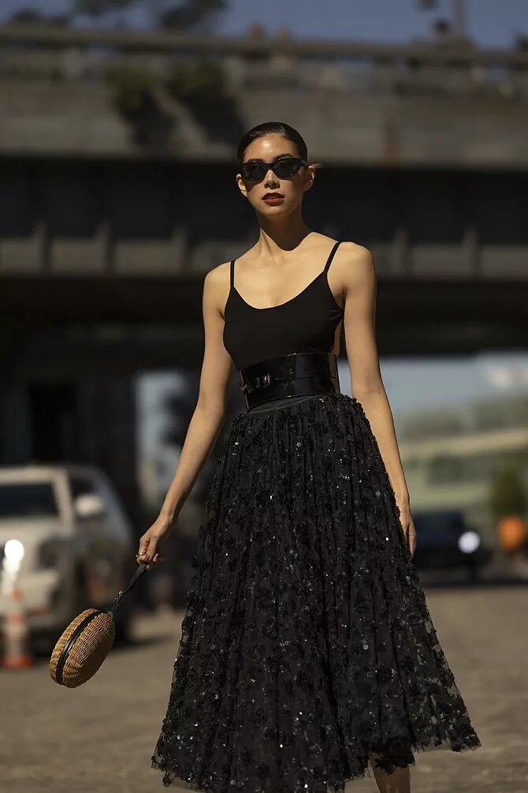Influencia directa del streetwear, este básico de armario viene dispuesto a protagonizar nuestros conjuntos más cómodos. Y es que durante las próximas temporadas serán las siluetas anchas las que reinen, como demostraba Karin Teigl con estos vaqueros de Jacquemus. De cintura alta, acampanados, oversize y preferiblemente en denim de efecto desgastado. Esta es también la propuesta de firmas como Vetements, Valentino, Etro o Givenchy.
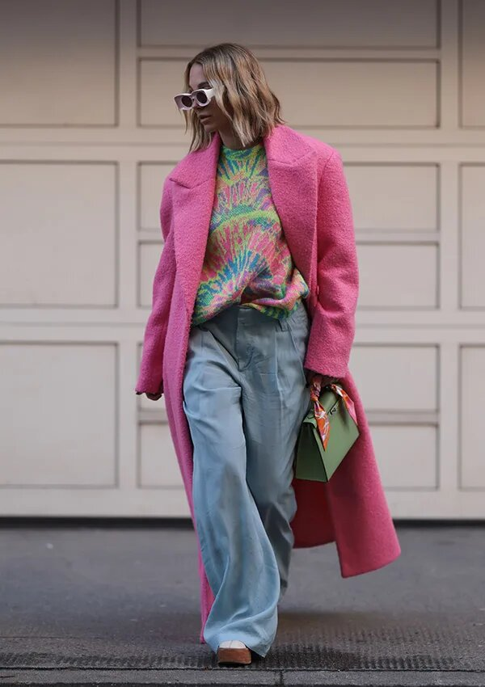La búsqueda de la comodidad ha hecho que los zapatos planos se cuelen entre las nuevas propuestas de este año. Chanel rescataba su modelo más clásico, las bailarinas Slingblack, aquellas con punta redondeada en color negro. Este año vienen además con lazo, para darle un toque aún más preppy. Pero la casa francesa no es la única que apuesta por ellas: Miu Miu o Christian Louboutin también lo hacen con sus propias versiones.
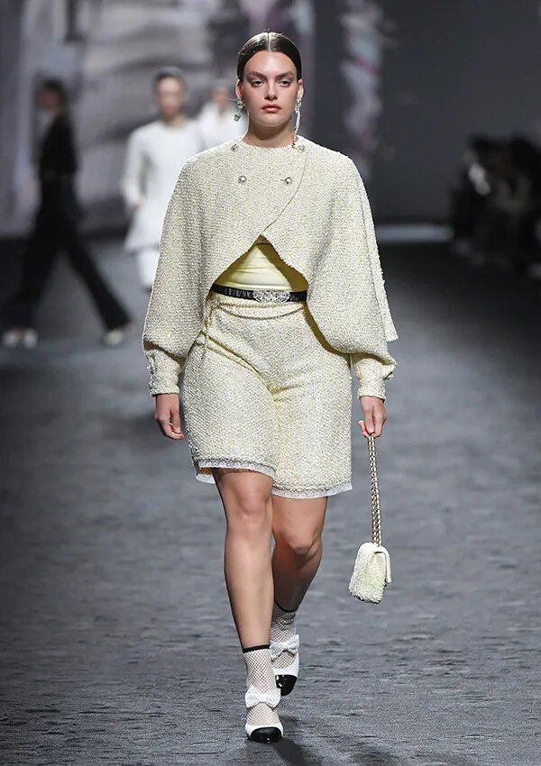Rosalía iniciaba en 2022 la revolución de las prendas de inspiración motera, siendo la chaqueta de cuero su pieza insignia. Pues bien, esta prenda permanecerá como una de las opciones preferidas del entretiempo, aunque vemos cómo esta vez son las siluetas bicolor y de diseños más sencillos las que predominan. Expertas como Gabriella Berdugo sugieren incluirlas en looks working como este.
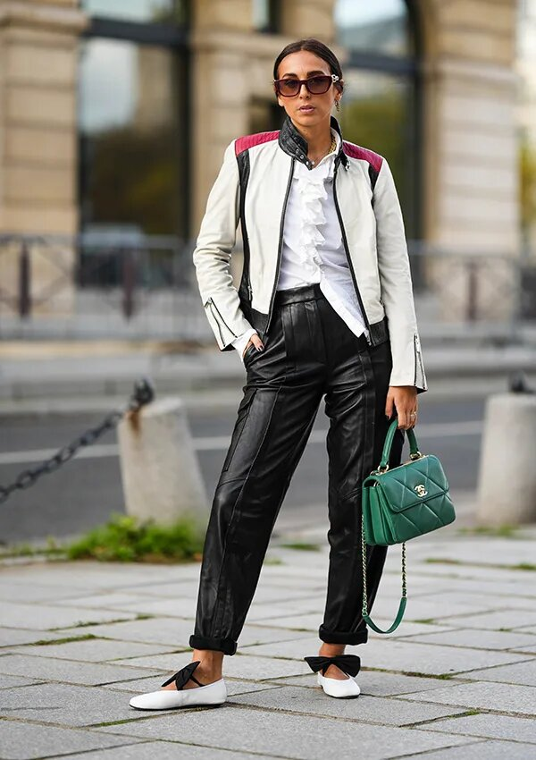El enorme éxito de la serie Miércoles y el vestuario que lleva su protagonista, Jenna Ortega, han logrado despertar el interés de todos aquellos escépticos de la estética dark. Algo que han reforzado además diferentes firmas sobre la pasarela, incluyendo propuestas oscuras y de cierto aire minimalista para la próxima primavera. Annakiki, Dolce & Gabbana o Versace han sido solo algunas de ellas.
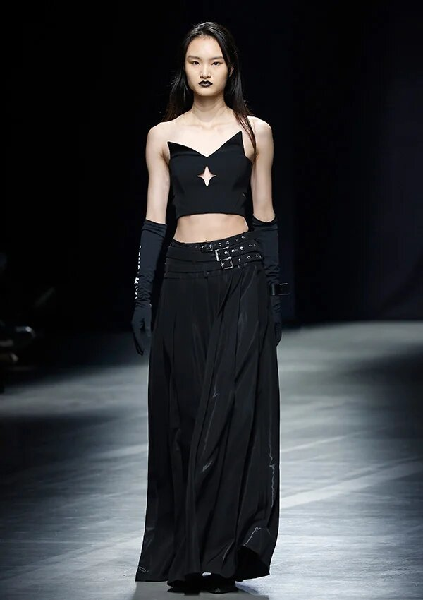